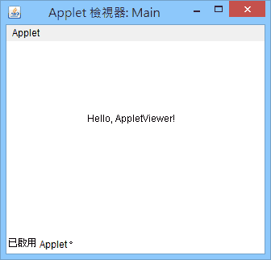

appletviewer
Windows 版 JDK 有個 appletviewer.exe[1]，是用來測試 Applet 的工具。
使用方式
先把編譯好的 Applet 嵌到網頁，再用「命令提示字元」將網頁當作參數，傳遞給 appletviewer。
Main.java
Applet.html
命令提示字元
執行結果

Windows 版 JDK 有個 appletviewer.exe[1]，是用來測試 Applet 的工具。
先把編譯好的 Applet 嵌到網頁，再用「命令提示字元」將網頁當作參數，傳遞給 appletviewer。
